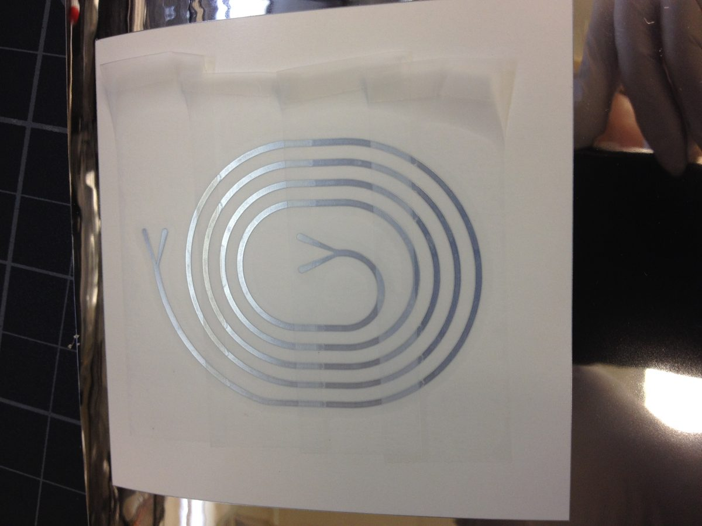
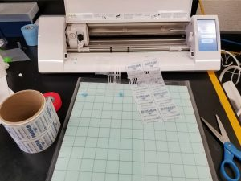

Precise Parafilm Designs

While more expensive than a razor blade, you can cut Parafilm or tape to make precise chambers and masks without a laser cutter by using a commercial knife printer like the Silhouette CAMEO.

From our own experience its remarkably robust though it can be a little finicky when loading the cutting mat before that actual cutting begins. The product comes with Silhouette Studio, a2D CAD software that's easy to design with and allows you to import designs from other standard formats for "printing".